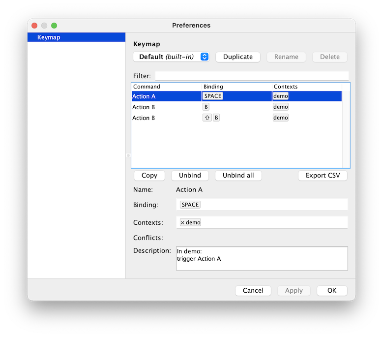

How to set up user-configurable keyboard shortcuts using ui-behaviour and BigDataViewer’s Preferences Dialog
ui-behaviour
bigdataviewer
Author
Tobias Pietzsch
Published
August 8, 2022
While developing the BDV Preferences dialog, a “pattern” has emerged of how we wire up the shortcut and action definitions. This tutorial explains the current recommended way of doing that. We give some background about using ui-behaviour etc. Feel free to just skip to the end for the recommended pattern.
Introduction
In BigDataViewer 10.4 we added a Preferences dialog. This makes settings more user accessible, that previously could only be made through editing config files. In particular, users can now easily override BigDataViewer keybindings to their liking.
It is also possible to define and switch between multiple sets of keybindings. For example, in Mastodon, we have predefined keymaps that have * basic BDV key bindings, but many shortcuts remapped to navigate along a cell lineage, or * full BDV key bindings, at the expense of more complicated shortcuts for cell lineage navigation.
On top of these users can define their own completely customised keymaps.
This is all based on ui-bahaviour, which several tools (BDV-based and otherwise) already use for managing shortcuts. While developing the Mastodon Preferences dialog, and now carrying over to BigDataViewer, a pattern has emerged of how we wire up the shortcut and action definitions. It would be great if this would become a blueprint for actions in other tools, because a) that will make the code easier to understand and b) facilitate reuse of action definitions across projects.
We work towards the recommended pattern, from scratch, in a series of examples that you can also find on github.
Lets look at a basic example of integrating ui-beahviour in a AWT/Swing application.
We need a minimal application to play with: MainPanel is a JPanel containing (only) a single JLabel displaying the text "hello". The displayed text can be changed by the setText(String) method. We will use this to define different mock “actions”.
This is of course exactly what AWT/Swing’s Key Bindings framework (InputMap, ActionMap) does. InputActionBindings adds very little over that; basically only more convenient InputMap chaining.
Side note: The initial purpose of ui-behaviour was to offer a similar framework for mouse clicks, scrolls, drags, etc. Modeled after InputMap and ActionMap, there are InputTriggerMap and BehaviourMap. Analogous to InputActionBindings there is TriggerBehaviourBindings.
Anyway, we connect the InputActionBindings instance to our MainPanel as follows.
InputActionBindings manages a chain of InputMap/ActionMap pairs. An Actions object encapsulates one such pair, and feeds new action definitions into it. We create a new Actions (the constructor arguments don’t matter for now) …
A unique name for the action (this will be used as the actions key in the underlying InputMap/ActionMap.
Zero or more keystrokes that should trigger the action.
Here for example, the Runnable sets the text “Action A triggered” in the panel label. It is added under the name “Action A”, and triggered by the “SPACE” key, or the “A” key by default. The syntax for key strokes is described here.
Let’s add a few more actions.
Code
actions.runnableAction(()-> panel.setText("Action B triggered"),"Action B","B","shift B");actions.runnableAction(()-> panel.setText("Action C triggered"),"Action C","1","2","3","4","5","6","7","8","9","0");
Now we can use these defined shortcuts to run these three actions (which will change the text label to “Action A/B/C triggered”.
Another goal of ui-behaviour is to make mouse and key bindings easily configurable by the user (for example through config files).
This is the purpose of the Actions constructor arguments
var action =newActions(newInputTriggerConfig(),"demo");
The first argument is a InputTriggerConfig, and after that one or more String contexts are given (more on that later).
The InputTriggerConfig contains is basically a map from action names to key bindings. When adding a new action, for example like this:
actions.runnableAction(()-> mainPanel.setText("Action B triggered"),"Action B","B","shift B");
then actions will first look into its InputTriggerConfig to check whether any key binding is associated with the respective action name (“Action B”). If nothing is defined in the InputTriggerConfig then (and only then) the specified default key bindings will be used ("B" and "shift B").
Loading shortcuts from a config file
So far, we just used a new, empty InputTriggerConfig, meaning we just get the specified defaults, which is exactly what we want for prototyping. If the project becomes more mature, and we want to change the config from outside, we can load the InputTriggerConfig from a config file.
---
- !mapping
action: Action A
contexts: [demo]
triggers: [SPACE, A]
- !mapping
action: Action B
contexts: [demo]
triggers: [N]
The format should be more or less self-explanatory.
The loaded config should now map the String "Action A" to the Set of Strings {"SPACE", "A"}, and "Action B" to {"N"}. We could set up actions with the loaded config in the constructor, and then define the same actions as in the previous example.
Alternatively, we can just update the existing Actions with the new config.
Code
actions.updateKeyConfig(config,false);
The config contains bindings for “Action A” and “Action B”. These will override the specified default bindings. So “Action A” will be triggered by the “SPACE” or “A” keys, and “Action B” will be triggered by “N”.
The config doesn’t specify anything for “Action C”, so that will be triggered by the programmatically specified defaults, that is, “1”, “2”, etc.
Action context
Besides the InputTriggerConfig, the Actions constructor also requires one ore more String... context arguments.
The idea is that the same action (or at least action name) might occur in different contexts, that is, different tools, different windows of the same tool, etc. For example, an action named “Undo” could occur in many contexts and it would be nice to be able to assign different shortcuts, depending on context.
Therefore, an InputTriggerConfig does not directly map action to shortcuts, but rather maps (action, context) pairs to shortcuts, where action and context are both Strings. So, for example, ("Undo", "bdv") can map to a different shortcut than ("Undo", "paintera").
The context arguments given in the Actions constructor specify which subsets of key bindings defined in the InputTriggerConfig should be considered. In the above example, we have
var actions =newActions( config,"demo")
This actions will pick up bindings for ("Undo", "demo") from the config, but not ("Undo", "bdv") for example.
Disabled actions
There is a special trigger "not mapped" that can be used to specify that a particular action should not be associated to any shortcut. For example, if we add
- !mapping
action: Action C
contexts: [demo]
triggers: [not mapped]
to the config.yaml file, then “Action C” will be disabled, that is, the programmatic defaults “1”, “2”, etc., will not be used.
Being able to define shortcuts through a config file is useful. The config files can be edited, and distributed between different users or computers.
Even more comfortable is to be able to modify shortcuts directly through the UI, at runtime.
Preferences dialog
For this, we use bdv.ui.settings.SettingsPanel. This panel implements a typical Preferences layout (like it’s used in Eclipse, for example) with a tree of preferences sections on the left, the selected section on the right, and Apply, Ok, Cancel buttons on the bottom.
The following PrefererencesDialog contains only the SettingsPanel, and a method addPage() to adds new sections (bdv.ui.settings.SettingsPage) to the preferences tree.
Let’s instantiate a PreferencesDialog for our example, and add a keyboard shortcut (command-comma or control-comma) to show it.
Code
var preferencesDialog =newPreferencesDialog( frame );actions.runnableAction(()-> preferencesDialog.setVisible(!preferencesDialog.isVisible()),"Preferences","meta COMMA","ctrl COMMA");
Next, we want to add a preferences section for configuring shortcuts. There is bdv.ui.keymap.KeymapSettingsPage that we can readily use. In the end this will give us something like this:  What remains to be done is to fill the settings page with a list of configurable actions.
CommandDescriptions
Specifially, we need to supply the KeymapSettingsPage with a list of existing actions, with short textual descriptions. This is done by creating a CommandDescriptions object and adding the configurable actions.
For each action, we add its name and default shortcuts in the same way we did when creating the action, and a short description (this is just for showing to the user, so can be left empty if you’re lazy…).
The other thing we need to supply to the KeymapSettingsPage is a KeymapManager. KeymapManager maintains a set of named Keymaps (some built-in, some user-defined). A Keymap is a simple container for a InputTriggerConfig, adding just a name and support for listeners to be notified when the InputTriggerConfig changes.
Our KeymapManager extends the existing AbstractKeymapManager base class. The only thing that needs to be done is providing one or more default Keymaps. We can build a default keymap from the above descriptions. (But they could also be loaded from resources, build manually, …)
Code
importbdv.ui.keymap.AbstractKeymapManager;importbdv.ui.keymap.Keymap;var defaultKeymap =newKeymap("Default", descriptions.createDefaultKeyconfig());/*** Manages a collection of {@link Keymap}.*/publicclass KeymapManager extends AbstractKeymapManager< KeymapManager >{@OverrideprotectedList<Keymap>loadBuiltinStyles(){returnCollections.singletonList( defaultKeymap );}@OverridepublicvoidsaveStyles(){// not implemented.// Here we would save user defined keymaps to YAML files, for example.}}
We create a KeyMapManager instance and add it to the Preferences dialog (via KeymapSettingsPage).
The KeyMapManager (via its base class) exposes the user-selected keymap. We set that for our actions object. We also add a listener that refreshes actions keybinding when that keymap changes.
Code
var keymap = keymapManager.getForwardSelectedKeymap();actions.updateKeyConfig( keymap.getConfig(),false);keymap.updateListeners().add(()-> actions.updateKeyConfig( keymap.getConfig(),false));
true
That’s it. The user can now use the Preferences dialog to define custom keymaps with shortcuts to their liking, and switch between different keymaps. (Use command-comma or control-comma to show the preferences dialog).
Keeping the list of existing actions (that is, the CommandDescriptions) up to date is tedious. Actions that should appear in the config dialog may be scattered through your own code and dependencies. This can be somewhat automated with CommandDescriptionProviders. These are scijava @Plugins that can be discovered at runtime.
Note the use of DEMO_SCOPE here. The same scope is also given in the MyActionDescriptions constructor. The discoverProviders() method takes an optional scope argument, and will only discover CommandDescriptionProvider that match this scope. If no scope is given, all CommandDescriptionProvider on the classpath will be discovered. For example within Fiji, that would include actions from Mastodon and BigDataViewer.
Unfortunately, the @Plugin annotations do not work for classes defined in JShell (used by this notebook). As a workaround, we can add MyActionDescriptions manually.
Action definitions in BigDataViewer and Mastodon are organized in the following way.
A set of related actions is collected into a MyActions (for example) class. Action names and default shortcuts are defined as public static final constants, because they are used both for defining the actions, and for creating action Descriptions.
The actions contained in MyActions are described in a public static inner class Descriptions extends CommandDescriptionProvider.
In the Descriptions constructor, we give a scope for the respective library / tool. Ideally, the scope should be defined public static somewhere so that is can easily used outside the component to discover its actions. For example, BigDataViewer uses this scope. If another tool (BigStitcher, BigWarp, etc.) wants to include BDV shortcuts into its customizable keymaps, they can be easily discovered like that.
MyActions contains one install method that installs all actions into a provided Actions argument. Ideally, MyActions is stateless, and install method is static.
The remaining arguments to install are whatever is needed to create the actions. In the example, the mainPanel is needed to create “Action A” and “Action B”, and the preferencesDialog is needed to create the action to show/hide it.
So, MyActions.install(...) is called to install into a provided Actions. Usually every frame/panel in the application should have an Actions instance, which is linked to the KeymapManager so that keymap updates propagate correctly.
And that’s it… This is currently the recommended way to structure and bundle action definitions. You can find the full example on github.
See BigDataViewer’s NavigationActions as an example “in the wild”. For behaviours (mouse gestures, etc.) the structure is the same. See BigDataViewer’s TransformEventHandler2D for example.